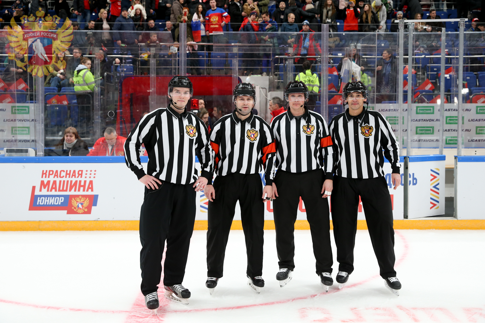

Стандартная хоккейная площадка имеет размеры 56-61 м в длину и 26-30 м в ширину. Углы площадки скруглены. Ледовая поверхность окружена бортами высотой 1,0-1,22 м.
Состав команды и продолжительность игры
На площадке одновременно находятся 6 игроков (5 полевых + 1 вратарь)
Матч состоит из трёх периодов по 20 минут чистого времени
Перерывы между периодами длятся 15 минут
При ничьей назначается овертайм, а затем буллиты
Разрешены неограниченные замены игроков во время игры

Основные нарушения и штрафы
Малый штраф (2 минуты) - подножки, зацепы, задержки, опасная игра высокой клюшкой
Большой штраф (5 минут) - грубые нарушения, драки
Дисциплинарный штраф (10 минут) - неспортивное поведение
Буллит (штрафной бросок) - назначается при нарушении на игроке, вышедшем один на один с вратарём
Система офсайда
Положение "вне игры" фиксируется, когда игрок атакующей команды пересекает синюю линию зоны соперника раньше шайбы.
При этом атака прекращается, и вбрасывание происходит в нейтральной зоне.
Правило проброса
Проброс фиксируется, когда игрок отправляет шайбу из своей половины поля за линию ворот соперника, и она никем не касается.
В этом случае вбрасывание происходит в зоне команды, совершившей проброс.